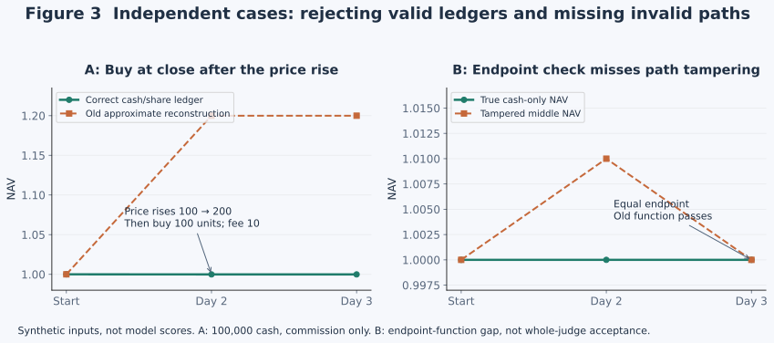

Ruiteng Huang · October 7, 2026 · Interim research note · Evidence cutoff 14:40 UTC
Giving long-horizon agents a reason for their next step
Understanding LoopX’s semantic control plane through EdgeBench
An agent can work for hours and retain its entire conversation while continuing along an unproductive route. LoopX aims to keep the original goal, accumulated evidence and next action connected in a way that can be inspected and revised.
We have been studying this on portfolio risk calibration and Lean proof completion. Relative to our earliest attempts, both blind studies show substantive system-level progress: beyond persistent zeros, ineffective continuation and slow advancement, toward more verifiable artifacts, more reliable sustained work and markedly faster Lean progress in common time windows. LoopX repairs, prompts and benchmark execution improvements contributed together.
Our interim assessment is positive: the semantic control plane is showing value on real tasks, and the overall system is more effective than at the start. We now need to separate contributions and make the observed progress more stable and reusable. This article retains the evidence of overall improvement alongside technical mechanisms and unresolved counterexamples.
1. What the control plane controls
A long-horizon agent maintains at least two histories. Conversation history records what was said and done. Task and evidence state records what must still hold, under which conditions a finding remains valid, and why a next action is feasible. These histories complement each other. Resuming a conversation does not make an old conclusion applicable; completing a Todo does not establish that the original goal has been achieved.
We call LoopX’s approach a long-horizon semantic control plane. The goal and acceptance conditions constrain work; current evidence supports or challenges a route; results lead to continuation, replanning, waiting or stopping. The model proposes and interprets choices. The control plane preserves provenance, checks state transitions and returns the obligations that still apply to the executor.
- GoalAcceptance, scope and stops
- SelectionFeasible candidates and reasons
- ActionWork, validation and results
- EvidenceObservation, interpretation and scope
- RevisionContinue, switch, wait or finish
The guarantees differ across this cycle. A system can verify that work has a matching settlement, evidence names an input revision, and a rejected write leaves no partial effects. Field validation cannot establish that the model understood a qualification or chose the best route. Protocol correctness can be checked directly; cognitive benefit requires behavioral and outcome evidence.
Runtime, Todo counts and graph size therefore cannot stand in for long-horizon capability. We want to know whether the system preserves constraints while rejecting bad routes sooner, reusing validated results and allocating its remaining budget well. Reliable evaluation, recovery and context delivery belong in the same study because each can break that chain.
Research question: can experience improve later choices?
Research question and comparison methods updated October 10, 2026. This revision adds no experimental scores; all numerical results below retain their stated historical versions and observation windows.
We want to test whether, with the same model and comparable budgets, a general harness helps an agent accumulate and use experience well enough to keep making verifiable progress later in execution. A failed route should leave more than “failed before”: its conditions, what it ruled out and what new evidence would justify retrying. Recording that finding, changing a subsequent choice and improving the outcome require separate checks.
A main session that continues to interpret the goal and evidence is one way to study this question; cross-session recovery tests reliable state transfer. Session continuity alone does not establish better use of experience. Fresh-context execution and workflows can also preserve experience through files and external state. Comparisons should record the actual session strategy, available information and handoff cost, letting results determine applicability. EdgeBench Section 5.2 and Appendix G provide relevant comparisons of sustained execution, independent retries and harnesses; they do not isolate LoopX’s incremental benefit.
2. Two tasks, not one blended leaderboard
Portfolio requires a strategy developed on public training data and consistent trading, risk and accounting outputs. Lean requires proofs that preserve fixed declaration constraints and pass compilation and axiom-dependency checks. Negative evidence in Portfolio may mean a candidate is not worth pursuing under specified conditions. In Lean, it may mean a statement lacks an assumption and the proposed proof is impossible. Both demand sustained work, but their evidence and verifiable outcomes differ.
| Execution mode | Mechanism retained | Question |
|---|---|---|
| Official worker | Official stop hook and continuation | How far does the official execution path progress? |
| Single Codex call | One call, ending naturally | How much happens without an external continuation loop? |
| Native Goal | Codex goal execution and continuation | What does native long-horizon execution provide? |
| LoopX Resume | Same-session recovery, Todos, replanning and settlement | What do semantic control and reliable continuation change? |
| LoopX Explore | Resume plus optional evidence capture and exploration planning | Does structured evidence enter the next decision? |
The historical Portfolio design covered five workers × native/blind feedback, ten arms. Later work added selective ablations. Lean primarily uses blind runs. Native workers may obtain judge feedback. Blind workers retain public tasks, training data, local tests and validators, but receive neither judge scores nor hidden diagnostics. Background evaluation is an operator observation and is not returned to the blind solver. Blind means no judge feedback, not no feedback.
The reported model is gpt-6.1-sol / xhigh. Task defaults in the interim study were a 12-hour ceiling with five-minute sampling for Portfolio, and 24 hours with 30-minute sampling for Lean. Portfolio had no fixed aggregate evaluation concurrency cap; Lean had an independent cap of two. Earlier runs used 18 hours, and selected Lean runs were extended to 36 hours. Those original settings remain recorded rather than being rewritten to match new settings or presented as live defaults for later versions.
We also explored seeded phase Todos versus LoopX-generated plans, review cadence, context delivery and Explore changes. These attempts accompanied prompt, runner and contract repairs. Planned entry looked more promising and became the benchmark default. That is an engineering choice based on current evidence, not a universal advantage established by single cross-version runs.
Overall progress already observed
Lean provides direct common-window evidence. Under blind conditions, valid samples from early LoopX v14 and current #5844 runs are shown below. More verifiable proof progress in the same time is a real observation, even before its component causes are separated.
| Lean raw score | Early Resume v14 | Current Resume | Early Explore v14 | Current Explore |
|---|---|---|---|---|
| 180 minutes | 0.1103 | 0.3478 | 0.1134 | 0.4019 |
| 450 minutes | 0.1882 | 0.5243 | 0.1996 | 0.5605 |
In these single-run windows, the current LoopX paths reached roughly 2.8–3.5 times the earlier raw scores. This ratio describes observations. Prompts, task entry, runners and control mechanisms changed together; it is neither the causal gain of one feature nor a result to extrapolate directly to other tasks.
Portfolio improved differently. Early persistent zeros included feedback-wrapper and accounting-contract defects. After repairs, blind arms produced valid ledgers, conducted local research and obtained usable evaluations. Older Resume reached a best sampled 17.32; later planned v17 reached 25.39, but its last sample was only 12.38, versus 15.57 for older Resume. Budgets and scoring revisions also differed. At roughly 7h45, current #5844 Resume/Explore had best sampled scores of 15.01/12.21 and latest samples of 8.15/9.67. Evaluability, continuation and some best observed outcomes have moved beyond early obstacles; terminal quality and sustained retention of good solutions still need work.
This supports a more effective overall system while leaving two questions open: where did the gains come from, and how do we prevent regression with a new version or more runtime? Improving benchmark execution—shared iteration guidance, correct recovery, task-specific sampling and budgets—is itself part of long-horizon systems engineering. Its contribution should be recorded rather than attributed entirely to the graph or replanning.
3. First make the feedback trustworthy
The early Portfolio blind zeros exposed two different problems. Our blind wrapper had removed iterative optimization and best-version guidance along with the judge entrypoint, confounding feedback availability with behavioral instructions. We repaired the wrapper and started new attempts while retaining the old results. Independent reconciliation of completed samples then exposed differences between the evaluator’s assumptions and actual execution semantics.
A tiny counterexample can invalidate a whole curve
Start with 100,000 cash. An asset rises from 100 to 200. Buy 100 units only at the second day’s close and pay 10 commission. Valuing them immediately at that same close gives equity of 99,990 and NAV of 0.9999. The account did not earn the price increase before it bought.
The old reconstruction multiplied post-close weights by the day’s return and produced approximately 1.199919992, rejecting the correct account. In the opposite direction, a true all-cash path [1, 1, 1] reported as [1, 1.01, 1] passed an endpoint-only check. The first counterexample proves false rejection, the second a local check’s blind spot. The latter does not prove that the complete judge accepts fabrication.

For two frozen terminal samples, independent reconciliation without importing solver calculation functions matched all 243 trading days in each: equity residual below 4×10⁻⁹, NAV residual below 5×10⁻¹⁶, and no share-count difference. This established those ledgers’ consistency, not strategy quality. Seven groups of matching trade signatures in another sample corresponded to separate cash, inventory and cost effects. A duplicate signature can trigger investigation; it cannot replace economic verification.
Key technical conventions in ledger-v2
The versioned task fixes initial cash at 10 million with no holdings, close-time execution, 5 bps commission and 1 bp cash slippage. Borrow cost accrues on prior-close short market value at 4% annually using ACT/365 calendar days. Crossing zero inventory becomes ordered execution legs. Cash, integer shares, costs, equity, NAV and weights are validated daily.
Reconstruction starts from executions and prices, not reported cash or NAV. Negative cases cover missing costs, repeated execution identities, extra trades without economic effects, invalid inventory transitions, altered intermediate NAV, missing dates and non-finite numbers. Positive cases include legitimate equal-sized fills, weekend borrow and no-trade days. Rule revisions are versioned; they do not replace historical scores. See EdgeBench #14.
Better feedback does not guarantee a better strategy
The single blind ledger reconciled, yet removing the incorrect NAV penalty still left an approximately −1.87 subtotal, clipped to zero. Removing a duplicate-signature penalty in another sample would yield a counterfactual 18.05. We did not record that as a new official score.
Cost attribution needs economic quantities rather than counts. Of single blind’s 475 fills, 281 concerned hedging, but their commission was only about 0.0412% of initial capital. Borrow cost was about 0.4484%, most of the total 0.7129% cost. Hedging is a task requirement, so deleting shorts is not a valid shortcut. A testable question is whether strategy selection and subsequent hedge adjustments share compatible cost and risk objectives on public training data.
This repair has substantial value with a precise meaning: it helps separate capability from measurement error. It is not a LoopX solving gain. Nor may terminal hidden diagnostics become tailored advice to an active blind worker.
4. Goals, work items and execution need different stopping rules
The numerical tables above retain the initial draft’s evidence cutoff. Added mechanism and closeout observations below extend through 2026-10-08 09:33 UTC. They remain exploratory, change no formal score eligibility and do not replace complete terminal acceptance.
One concrete failure occurred when seeded-blind wrote no_followup after roughly 34 minutes. The outer process resumed about 100 times without restoring useful work. A live scheduler is not a runnable semantic path. In another failure pattern, the system already knew replanning was needed but first offered a predictably invalid choice, forcing a failed call before revealing the next step.
No existing Todo does not imply that the original goal is complete. After finishing a work item, the agent must compare the result with the original acceptance: is it satisfied, does a reasonable next step remain within authorization, is there an external dependency, or is there truly no useful continuation? Replanning may produce work or justify staying on the same route. It should not invent tasks merely to keep a loop moving.
Review completed work turns, not just completed Todos
The previous product default checked periodically after five completed Todos. A proof task can stay unfinished for hours, so Todo completion may lag actual investment. #5879 changed the implicit unit to settled effective work Turns: five for the product and three for benchmarks at that revision, while explicit legacy Todo settings retained their unit. The change has merged. Frozen experiments retain their original settings, and a source merge does not automatically upgrade installed instances.
A Turn here is neither a model message nor a tool call. Cadence comes from uniquely settled work: uncommitted refreshes, retries and duplicate records must not inflate the count. Reaching the interval asks for a review, not a mandatory route change, and grants no budget or authority. Real entrypoints have been tested to trigger while a Todo is still open and to resume work after a justified continuation. Net benefit depends on what the model actually decides.
The counter must also distinguish work from observation. A validated negative result can be effective work; monitor-only polls, duplicate submissions and unsettled attempts do not count. This lets a long-open Todo receive periodic review without letting background sampling trigger pointless replans. A review should connect the original goal, candidate evidence and the next action. Choosing to continue can be correct; acknowledging that a check occurred does not establish better research direction.
Review cost also needs a breakdown by trigger. Periodic checks, a remaining goal gap after a work item ends, and new evidence invalidating a key assumption may need different depths of review. Changing the interval affects only one category. If every small completion rebuilds the global plan, a longer interval may not solve the problem. Conversely, a replan phase can contain useful probes and validation, so its entire duration is not administrative waste. Traces should distinguish useful route revision, repeated evidence gathering and mechanical bookkeeping before testing the boundary between local continuation and heavier global review.
Recovery and settlement are distinct chains
Session recovery preserves execution context. Settlement connects the current Turn, selected work, validation result, durable writeback and budget use. A retry after a lost response needs to recognize existing effects rather than execute or count them twice. Restoring a session without settlement can revisit the same obstacle; correct settlement with the wrong session can lose the solving context.
Repairs followed existing owners: exact session recovery, receipt-scoped next actions, and ineffective-continuation diagnosis. These have concrete failure-repair evidence. They establish that work can continue correctly, not that the next work is well chosen.
5. Explore must carry evidence into an actual choice
We observed enabled Explore hooks on all 20 reads in two groups’ first 180 minutes, while their graphs remained empty. The model was still discovering things: a counterexample to directly inheriting a tail bound from a finite prefix remained in local validation notes. The missing path was from that result to a scoped graph record, task association and later use. A higher read quota cannot fix a write that never happened.
The response was more than a reminder to write a graph. An optional capability hook attaches capture to ordinary result writeback. The existing observation and route decision can be reused with an explicit question, applicability, input revision and finding status. A linked question can reuse its canonical scope. A low score cannot automatically imply refutation, and pausing a route does not mean it is forever wrong.
- Capture: was a useful result saved, with recoverable rejection and retry?
- Association: did it bind to the current question and Todo with its conditions and version intact?
- Retrieval: did the later decision receive it without crowding out other relevant counterevidence?
- Adoption: did the model use it to change or explicitly retain a choice, followed by consistent action?
Node counts cannot certify this chain. A later audit of four frozen runs found one and three findings in the two Explore arms, but no graph associations on seven inspected Todos. Two first writes lacked node_id; the model tried creating nodes, encountered scope conflicts and eventually recorded findings manually. Nonempty graphs had still not established the full path.
#5889 addresses that friction. A new question derives stable identity from explicit question and applicability; conflicts identify mismatched fields. Existing scope stays immutable, rejected inputs leave no partial effects, and retries do not duplicate records. Writes remain subject to the current Todo, claim and lease. This repairs identity and recovery without inventing scientific findings. Real leased writeback and readback are validated; supplementary runs now also contain natural capture, association and delivery in a later Turn. The graph’s incremental value over files or the same conversation remains unisolated.
Retrieval also needs progressive access: cover distinct questions first, then offer more records per question, with revision-bound pagination and question-specific expansion. Three initial entries can be a sensible context budget; a hard information ceiling of three can discard decision-relevant evidence. Selection and larger access must be assessed together.
Counterevidence: memory can work without a graph
Portfolio traces include retained results across 12 variants, five training years and four warm/cold checks. Another search required training Sharpe at least as high as baseline and turnover no higher, rejecting all nine candidates. That need not be a good research policy: all candidates had lower training returns and four had worse cold-start behavior, suggesting a limited search may have stayed too conservative.
Current Lean Explore also preserves hard cases, records local counterexamples to false statements and moves to other chapters. Files, Todos and the same conversation can carry this information. To establish the graph’s incremental value, we must identify an additional avoided repetition, retained qualification or changed choice. It cannot take credit for all memory.
Evidence, adoption and actual intervention need separate checks
One supplementary Portfolio sample records a risk finding, then implements and tests tail protection. On this period’s actual inputs, however, constrained and unconstrained allocations remain equal. A finding reaching code and passing stress checks does not establish an intervention in this task. A Lean chain proceeds from periodic-review candidate declarations to installing proofs, a full build and later batches. That is closer to adoption evidence than a node count, but still does not exclude the same conversation and local files supplying equivalent information.
A boundary failure is informative too. A supplementary Lean run rejects a ninth question association for one Todo because the active association set is limited to eight. It preserves existing associations, records the extra conclusion as standalone Goal-scoped evidence and resumes ordinary work. This limits one task’s association set, not the whole graph to eight findings. Recovery is not free. Reducing capture friction should preserve relevant decision evidence rather than silently deleting old counterevidence to make a write succeed.
6. Optimize the information path needed for a decision
One clear redundancy was an exact todo list --todo-id … response repeating the body in detail, list and role views. But traces showed that exact reads were not the dominant path. Models also obtained Todo information from Goal documents, quota summaries, batched commands and prior conversation. Shortening one command could not explain or solve the whole cost problem.
#5844 therefore converged on one goal: deliver the effective current work once, with progressive access to remaining sources. Ordinary heartbeat/quota returns the complete selected Todo, applicable acceptance, scoped open User obligations and participating hook content, without requiring TurnEnvelope. Already delivered sources are removed from pending reads. The mixed Goal document, which contains intent, other work and history, still requires an exact full read.
| Path | Before | After |
|---|---|---|
| Exact Todo | One body repeated across three views | One complete canonical record; inventory queries remain inventories |
| Ordinary quota | Work summary plus follow-up commands | Canonical current sources once, plus reads for remaining sources |
| Optional capability off | Generic skill could still induce useless reads | Participating hook owns the guidance; no routine off-state obligation |
| More background and evidence | Repeated dumps or only short summaries | Provenance, complete reads and expansion by question/revision |
Concrete same-fixture measurements and their limits
Exact Todo output fell from 15,986 UTF-8 bytes and three body copies to 2,721 bytes and one copy. Ordinary quota grew from 23,088 to 27,137 bytes against the command-only version because it carried actual content. Pending sources shrank from preference + Goal + Todo to Goal. This does not establish lower total tokens or latency: if old reads were already batched, removing a CLI process may remove no model round trip.
In 12 frozen real wakes, all received the complete Todo: nine through inline or file-based guards, three through exact reads. Eighteen inspected bodies matched their startup source digests. That establishes delivery and source consistency, not comprehension, complete constraint adherence or total cost benefit. The earlier roughly 78% synthetic compression claim likewise applies only to its measured output.
Progressive access does not mean offering a sentence and making the model guess. It separates information by decision relevance: complete constraints for current work arrive directly; complete intent, history and additional evidence retain reliable entrypoints. Failed sources, changed selection or changed revisions require recovery and current context, not treating stale content as a successful read.
Optional capabilities must not leak through generic guidance. Repeated semantic-preference reads induced by a generic skill while the capability is off are a boundary defect; #5874 returns that guidance to the participating hook. Smaller packets and fewer useless prompts help, but must preserve acceptance tails, applicability, continuation conditions and failure recovery. The optimization unit is the decision path, not one JSON length.
Tool granularity should match a meaningful operation
A direction worth testing is to put state and recovery complexity inside semantically complete tools with clear boundaries: obtain all constraints needed for current work, for example, or submit a result with its source and applicability. A tool may perform several internal checks while the model remains responsible for interpreting evidence and choosing a route. Anthropic’s tool-design guidance likewise organizes interfaces around real work rather than exposing every underlying API to the model.
Fewer commands alone are not the objective. Consolidation must preserve permissions, visible failures and retry semantics. Real execution must show whether an interface is easier to learn, produces fewer errors and turns saved interactions into useful work. #6038 improves action-specific CLI help and recovery from lease-argument errors. That repairs a usage path; it does not yet establish better task outcomes or lower whole-run cost.
7. Lean’s midcourse slowdown exposes a limit of the current approach
The improved #5844 Resume and Explore arms progressed quickly early on, then were overtaken by historical native Goal in the middle. We analyzed common 180–360 minute windows using solver-visible tool results and frozen source snapshots. Current arms share c0d519cf; historical Goal used c46f397c. Model and public task digest match, but dates, runners, prompts and budgets differ, with one run per cell. This is route diagnosis, not a clean causal framework comparison.
| Blind arm | Raw score at 180m | Raw score at 360m | Net sorry reduction | Files affected |
|---|---|---|---|---|
| Resume / planned / #5844 | 0.3478 | 0.4919 | 502 | 17 |
| Explore / planned / #5844 | 0.4019 | 0.5147 | 442 | 18 |
| Native Goal / historical | 0.3013 | 0.6477 | 1,015 | 41 |
Only valid returned samples are shown. Raw scores use the 0–1 representation without multiplying by 100. Source sorry tokens exclude strings and comments; they are neither proven-theorem counts nor integrity qualification. These rows retain the original common windows regardless of later runtime status.
Proof investment and immediate score differ
The task checks original declarations’ axiom dependencies and types against 2,901 baseline unqualified declarations. Removing a sorry, adding a helper, compiling locally and gaining a valid scored declaration are different events. Bridging custom definitions and Mathlib may pay off downstream. If a dependency still contains sorryAx, a local edit need not earn proportional credit. Missing assumptions cannot be fixed by silently changing required signatures.
Current runs mostly advance chapter by chapter, reaching limits, series, rearrangements and extrema in the middle. A Resume Appendix B.2 Turn spent 16.6 minutes filling six holes. An Explore Section 8.5 Turn spent 31.5 minutes filling 77, leaving a hard case and recording counterexamples to two original false statements. These spans include proof work, validation and settlement; they are not pure proving time. Some useful work does not immediately become positive score.
The historical baseline points toward candidate allocation
At 180–360 minutes, Resume’s reductions mostly came from Chapters 5/6 (213/223), and Explore’s from Chapters 6/7/8 (223/79/140). Historical Goal also advanced Chapters 9/10, Misc and MeasureTheory, accounting for 344 reductions in those four areas. It progressed in 41 files versus 17/18. The arms were not simply doing identical proofs at different speeds; they were choosing different work.
“LoopX never switches routes” is also contradicted. At roughly 197 minutes, Resume explicitly revised surjectivity/order-preservation bridging; around 252 minutes it recognized statement restrictions and switched from a foundations Todo to later chapters. Explore retained rearrangement problems and moved to Section 8.5 near 325 minutes, then preserved counterexamples and moved to 9.1 near 352. Review and substantive decisions occurred. What remains unproven is systematic comparison of feasible work packages and recent validation cost to improve allocation.
The evidence does not show growing management packets
Differences between monotonic session-usage endpoints give roughly 303k/289k output tokens for Resume’s first/second three hours, and 317k/292k for Explore. Tool events containing LoopX calls shrank from 1.14MB/0.72MB to 0.47MB/0.33MB. Those events can include other operations and are a transport proxy rather than exact control overhead. They nevertheless do not support the specific explanation that packets grew in the middle.
Successful full-build logs also showed no increase in summed declaration-audit job duration: Resume 318/257 seconds, Explore 181/119, with samples of 14/12 and 7/5 respectively. Evaluation queues for the corresponding 180/360 minute snapshots took roughly 1.7–3.4 seconds, with evaluation lasting 7.2–11.2 minutes. Delayed display can leave temporary gaps, but cannot explain the slope between those completed capture points. Failure retries and all validation cost are not fully covered.
The next question is therefore more specific than increasing quota or review frequency: can the agent compare routes, distinguish necessary dependencies from independently tractable work, and preserve revisit conditions for difficult cases? The control plane should make those judgments inspectable without hard-coding Lean knowledge or hidden scores into generic rules.
A curve has three clocks
Solver elapsed time, source capture time and score return time are different clocks. Lean’s full build and declaration audit take time, and sampling can queue. The latest returned score may therefore describe source from hours earlier. Placing it at the current runtime can make evaluation backlog look like a research plateau.
We align common windows by original capture time, retain queue and evaluation duration, and separate automated samples, active submissions and final artifacts. A native active submission cannot fill a blind auto-sampling curve; missing is not zero, and the best sample cannot replace the final delivery. Completed common windows still show the new supplement behind #5844: queueing cannot erase that counterevidence. Conversely, returned later #5844 samples still gain credit, so mid-run slowdown alone does not establish an absence of late potential.
Validation and model costs need separate denominators as well. The official repeat also shows concurrent full builds and probes, build interruption and reduced thread settings: validation contention can occur without LoopX. Output tokens divided by task wall time include thinking, tools and waiting; this is not a provider’s pure decoding rate. The evidence supports examining work selection, validation organization and model time together, while their independent contributions remain unresolved.
8. Assessing the improvements
Improvement and technical depth are separate axes. A deep contract repair may eliminate a rare dead loop; a small instruction repair may immediately release substantial work time. We assess the gap removed and its evidence, not PR counts or passed-test totals.
| Change | Demonstrated benefit | Technical substance | Not yet established |
|---|---|---|---|
| Task/evaluation validity | Strong: reproduced false rejection/blind spots and separated prompt confounds | Event timing, path ledgers, independent reconstruction, versioned experiments | A fair ranking after repairs |
| Continuation/settlement | Strong: concrete ineffective recovery and retry defects are testable | Separate goal and Todo completion; session, result and settlement identities | Long-run net benefit and failure rates across tasks |
| Context delivery | Local: deduplication, full body delivery and off-state isolation | Canonical content once, progressive reads, shared ordinary/envelope owner | Net tokens, latency and constraint-retention improvement |
| Work-turn review | Mechanism: triggers while a long Todo stays open; retries do not count | Settled-fact counting; review distinct from switching; explicit legacy units | Better selection rather than more ceremony |
| Explore evidence cycle | Observed: natural capture, association, later delivery and visible actions; actual intervention is not guaranteed | Scoped findings, stable question identity, task association, optional hooks | Incremental value over files/conversation and net task-quality or cost gains |
These experiments provide positive grounds for pursuing this direction: more verifiable blind work, fewer broken continuation loops and increasingly observable connections between evidence and tasks. A control plane should make “work happened,” “the result is trustworthy” and “the next step has a reason” separately inspectable. A break anywhere can leave the system active but ineffective. Connecting them still requires a model capable of choosing research directions. Progress is moving from keeping an agent running longer toward turning more runtime into useful work. The next stage is to stabilize that system-level improvement and test whether it can raise the capability ceiling further.
9. From interim observations to repeatable comparisons
As recorded at 2026-10-08 09:33 UTC, the supplement consists of Explore × native/blind on one frozen mainline: two Portfolio and two Lean arms. Each task also has one official blind workflow repeat; existing Resume, Explore and initial baselines are reused. Portfolio uses 12 hours with five-minute sampling; Lean uses 24 hours with 30-minute sampling. The LoopX supplements use planned entry, review every three settled effective work Turns and keep TurnEnvelope off. Exact source, image and original starts remain distinct; later repairs do not hot-update old arms.
| Closeout item | Question | Decisive evidence |
|---|---|---|
| Portfolio: terminal quality and retention | Do training selection, risk intervention and final quality agree? | Reproduce the best sample and final artifact separately; independently reconstruct the ledger and test original return/risk goals and actual intervention, retaining failures |
| Lean: valid progress and later selection | Does later work still validate original declarations, and does evidence alter candidate allocation? | Standard axiom and original-type checks, capture-aligned windows, review → implementation → validation chains and complete phase costs |
| Official repeats | How much do baseline routes and validation resources vary? | Keep historical arms and compare common windows and terminal outcomes; one repeat does not establish statistical stability |
| Isolated replay of existing frozen state | Could an unresolved mechanism ambiguity change the conclusion? | Reuse identical source and work only when needed; do not expand a confounded long-run matrix |
At that cutoff, the Portfolio supplements had ended and received independent numerical and ledger reproduction; complete Lean and official-repeat closeout was still pending. This methods update does not present that historical status as live runtime state or add unverified terminal results. Final analysis must reconcile solver termination, all captured scoring, integrity, original task goals, whole-run cost and evidence adoption. A terminal score returning does not mean every earlier capture has finished scoring; a successful source build does not mean every original declaration meets acceptance.
Next validation: confirm a difference, then explain it
An integrated change tests whether the system is more useful; independent repeats test stability; ablations test what caused a difference. Each requires different evidence. More tasks or execution modes do not substitute for repeated runs under the same conditions, and one best result does not establish a stable gain. Further comparisons should fix model, task and evaluator revisions, prompts, feedback access, session strategy and budget. Integrated exploration can identify the main differences, followed by repeats of frozen configurations and a small number of discriminating ablations. Tasks used for development and repeated configuration selection should be distinguished from those reserved for confirmation.
A strong baseline should retain normal continuation, file-based notes and legitimate feedback. Testing explicit evidence organization requires comparison with files or conversations that can retain equivalent information. A protocol that returns a candidate’s full permitted feedback only when it establishes a new best is a separate feedback condition: define how best is established, what may be returned and when notifications occur in advance, then compare harnesses within that condition. Richer feedback or a different notification frequency cannot be credited to structure alone; silence does not imply task regression.
| Comparison dimension | Evidence to retain together |
|---|---|
| Quality and retention | Best valid artifact and final usable delivery at the same budget, including degradation; a best sample does not replace terminal acceptance |
| Time and cost | Time and expense to comparable quality; model, tool, control and recovery costs; evaluation cost and resource waiting reported separately |
| Later gains and mechanism | Capture-aligned useful work later in execution; links between evidence delivery, reading, changed choices and actual actions |
| Stability and reproducibility | Independent-repeat distributions, failures, invalid runs and manual intervention; whether another user can obtain artifacts and explanatory records on the specified version |
Further results will continue in this bilingual article: gains scoped to tasks and conditions, regressions analyzed through choices and costs, and unresolved contributions kept uncertain. Enabling another researcher to inspect settings, understand negative results and reproduce key comparisons is what turns interim observations into cumulative research evidence.